Everything on an invoice
In the office app, press Help and type everything on an invoice
: the tour plays on your own screen, with your own data.
-
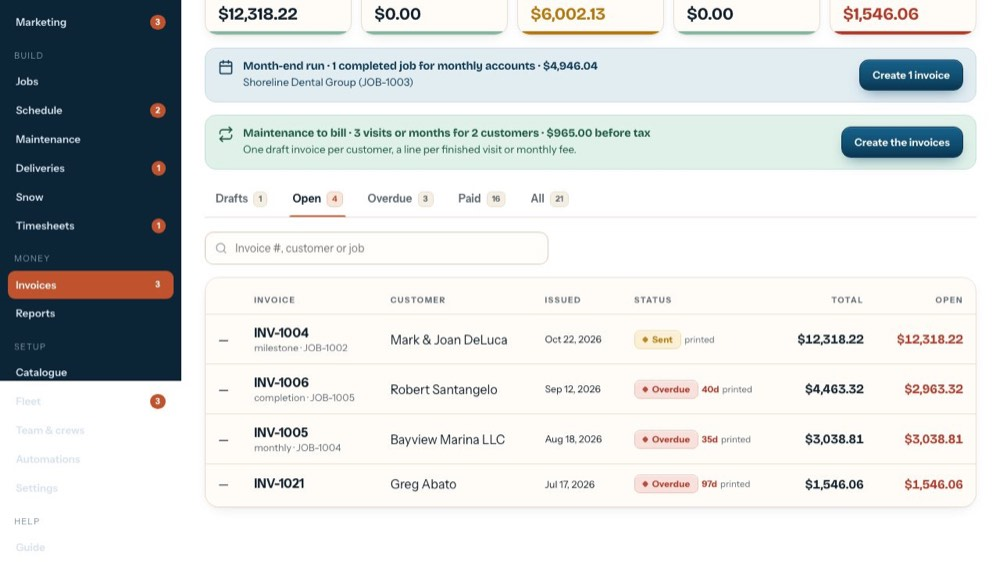
1Open an invoice
Click any invoice in the list. We'll open an overdue one.
-
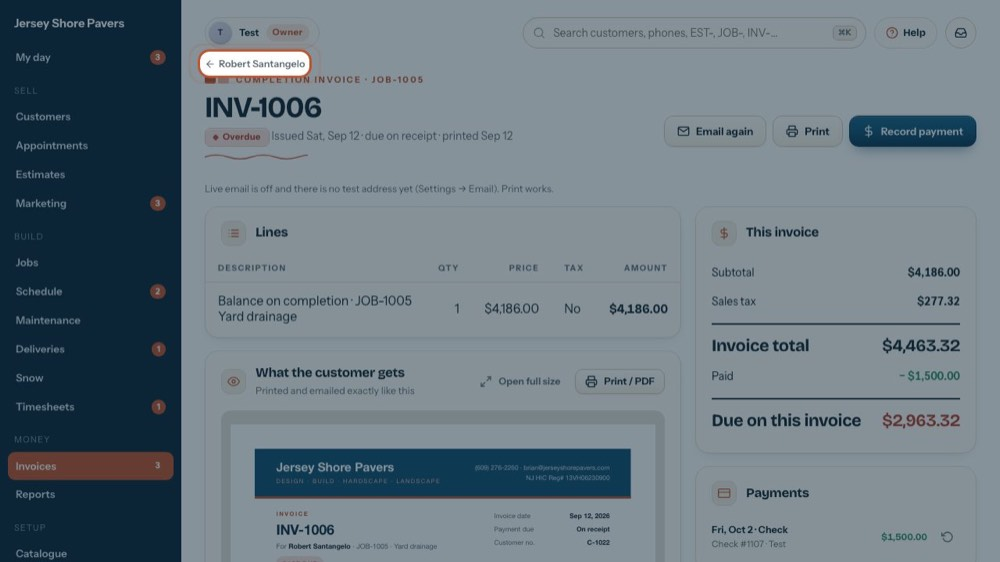
2Back to the customer
The customer's name above the number opens their screen.
-
 3
3Number, status and dates
Next to it: the kind of invoice and its job, the status, the date issued, when it's due (or due on receipt) and when it was emailed or printed.
-
 4
4Email
Emails the invoice to the customer. On a draft it's Email now and marks it sent. While live email is off it goes to the test address instead.
-
 5
5Print
Prints it exactly as the customer gets it. On a draft it's Print now and marks it sent (printed).
-
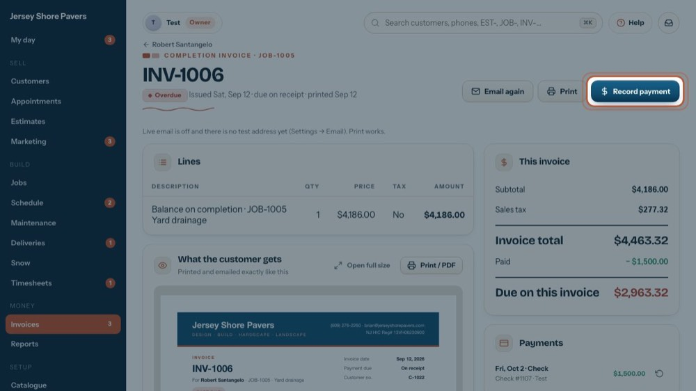
6Record payment
A check, cash, card or bank transfer came in. Let's open the form.
-
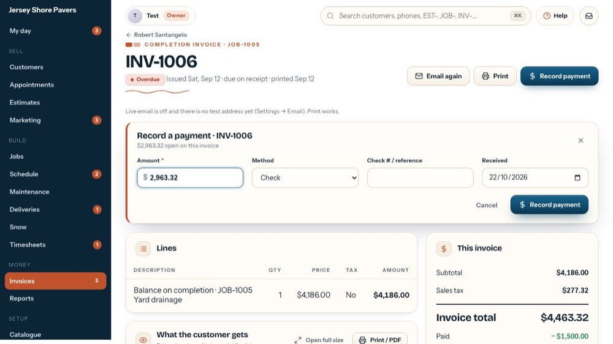
7Amount
Starts at what's still open. Enter less for a part payment. It can't be more than what's open.
-
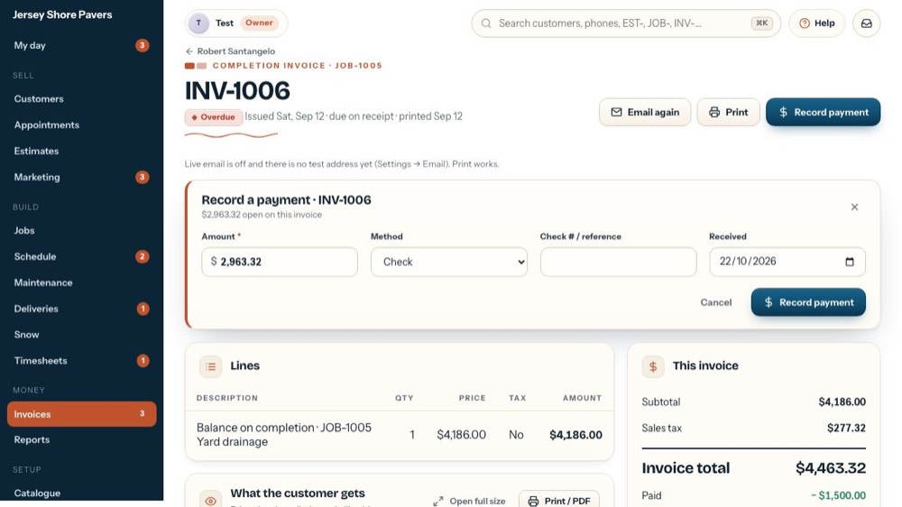
8Method
Check, Card, Cash, Bank transfer or Other. With Card, the card fee from Settings shows as its own surcharge; untick it to waive it.
-
 9
9Check # / reference
The check number or a reference, so the bookkeeper can match it to the deposit.
-
 10
10Received
The day the money came in. Today unless you change it.
-
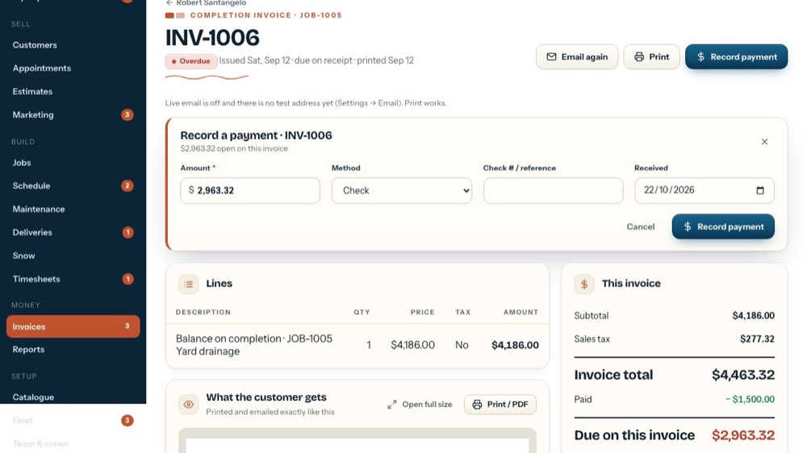
11Save the payment
Record payment saves it: the invoice shows what's left or Paid in full, and the customer's balance updates. The tour doesn't save it.
-
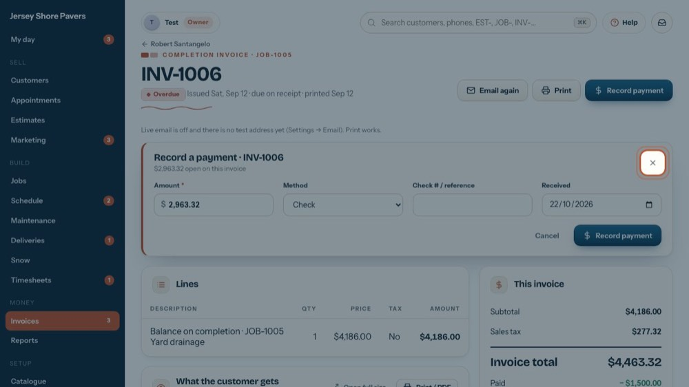
12Close the form
The X (or Cancel) closes it without recording anything.
-
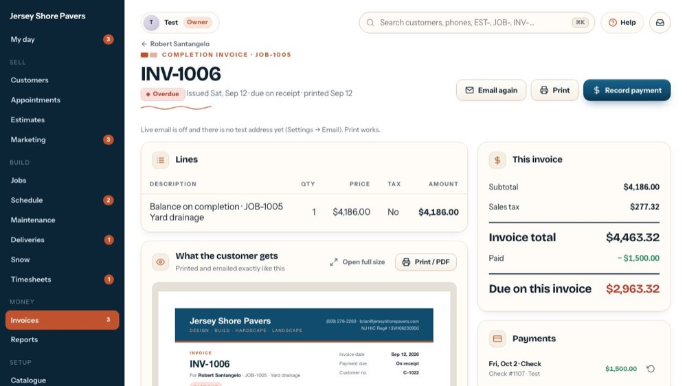
13Card on file
If the customer has a card on file, 'Charge card ••1234' and Card declined show here. Charge card charges what's open, after asking.
-
 14
14Card declined, void
Card declined logs a decline: the customer is asked to update the card and the office gets a call. Before any payment, a bin icon here voids the invoice.
-
 15
15Test mode
Shows while live email is off: emails go to the test address, not the customer. Turn live email on in Settings, Email.
-
 16
16Lines
What's billed: description, quantity, price, taxable or not, amount. A sent invoice is locked; to change it, void it and make a new one.
-
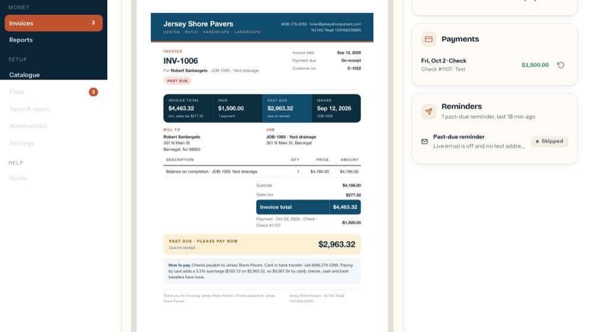
17The customer copy
Exactly what the customer gets by email or on paper. The invoice total and their account balance are kept apart.
-
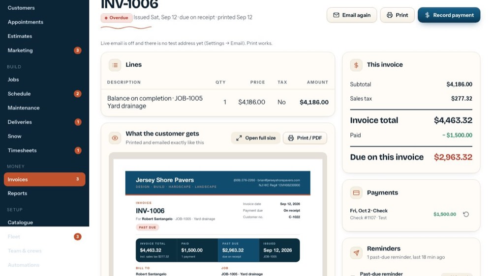
18Open full size
Opens the customer copy full width to read it.
-
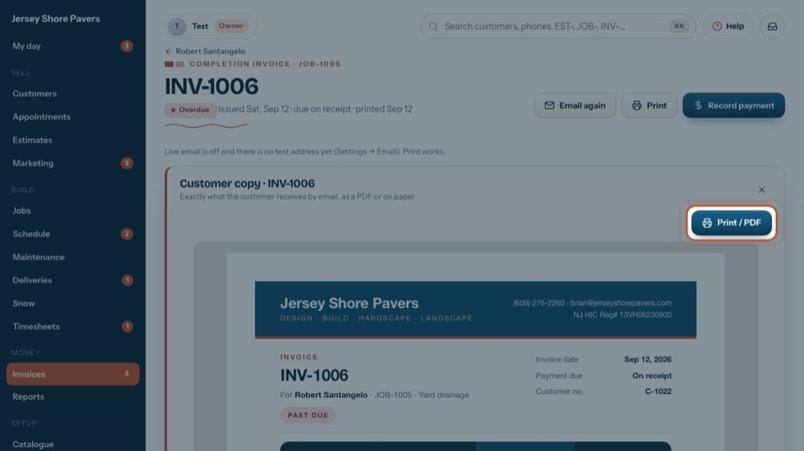
19Print / PDF
Prints this copy; choose Save as PDF in the print window to attach it to your own email. This doesn't mark the invoice sent.
-
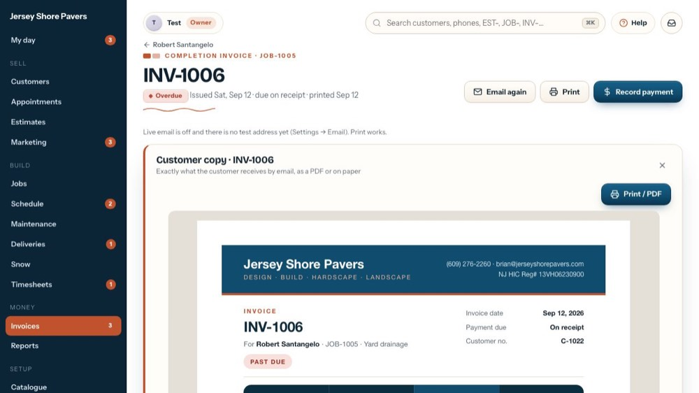
20Close it
The X closes the full-size copy.
-
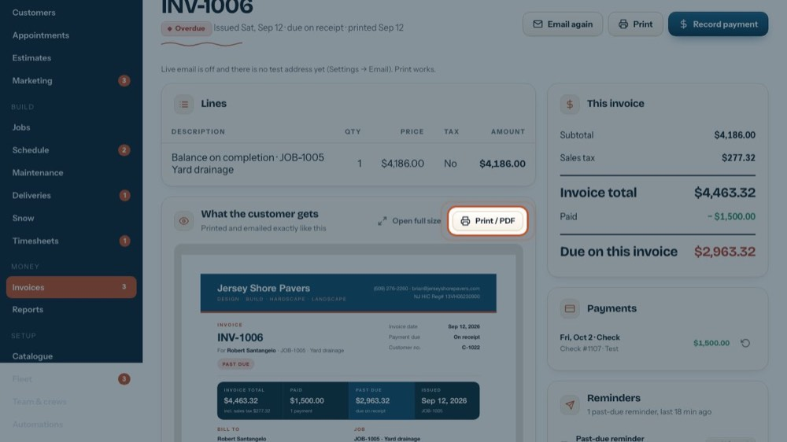
21Print / PDF
The same print or PDF, straight from the card.
-
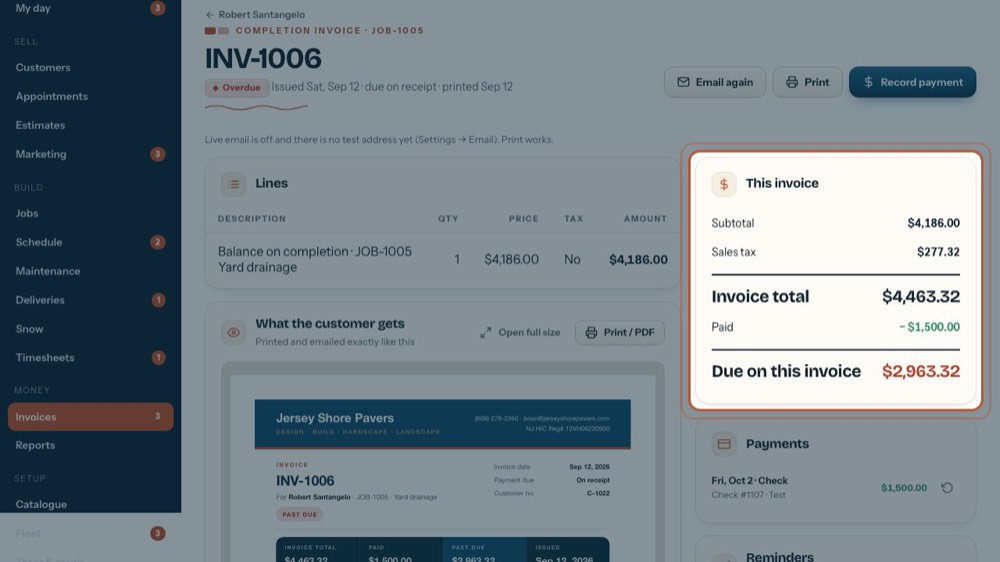
22This invoice
Subtotal, sales tax, the invoice total, what's been paid, and what's still due on this invoice alone.
-
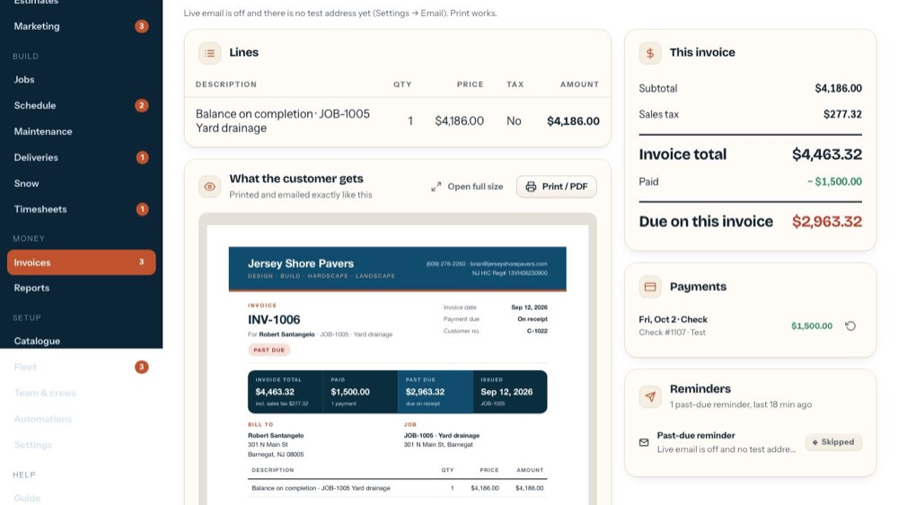
23The customer's account
When they have other open invoices, an account box shows the whole balance and lists the others (click one to open it).
-
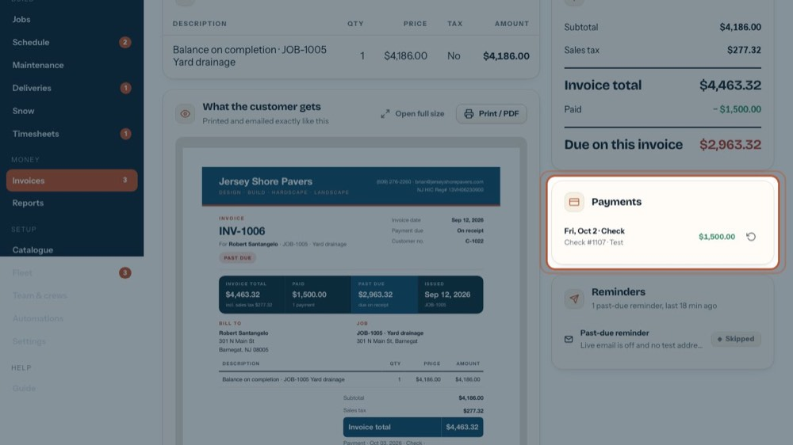
24Payments
Every payment on this invoice: date, method, check number or batch, who recorded it, and any card surcharge.
-
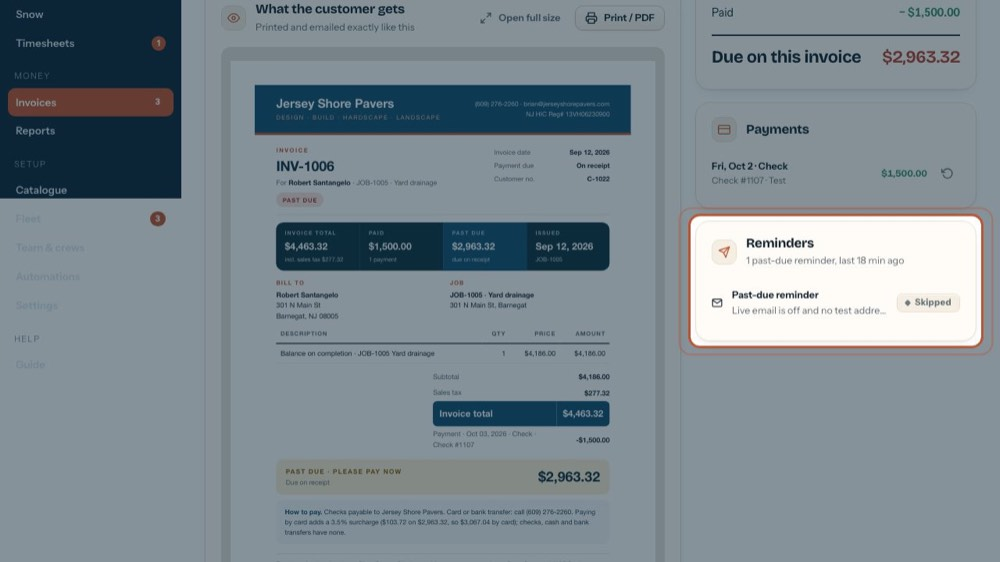
25Reminders
Past-due reminders and other messages about this invoice: sent, waiting or skipped, and when. They're set up on Automations.